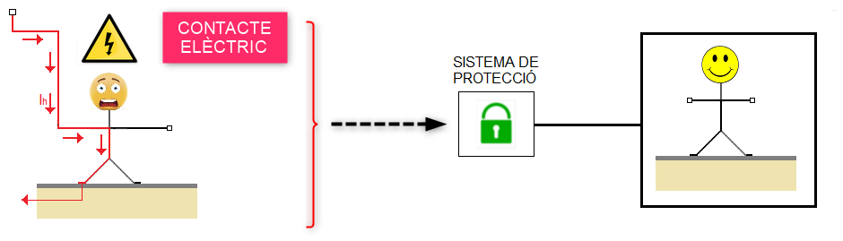

El risc elèctric és la probabilitat de que un treballador pastisca algun tipus de lesió durant la seua jornada laboral i que aquesta lesió estigue originada per l'energia elèctrica.
S'anomena contacte elèctric a la circulació del corrent elèctric pel cos humà.
El fet d'estar envoltats de tota mena de receptors elèctrics, fa que moltes vegades els treballadors menysvaloren aquest tipus de risc, es a dir, ens comportem com si aquest tipus d'energia no representés cap perill per l'ésser humà i la realitat ens demostra que l'energia elèctrica és molt perillosa. Una de les seues característiques, i precisament la que la fa molt perillosa, es que aquest tipus d'energia no es percebuda pels sentits (és parla de risc ocult) i que la seua percepció física es produeix únicament quan el corrent elèctric circul·la pel cos humà, es a dir, quan ja s'ha produït l'accident.
El risc elèctric no produeix un elevat nombre d'accidents de treball en comparació amb altres activitats però, quan aquests es produeixen solen acabar amb lesions molt greus o amb la mort del treballador.
Per tant, les instal·lacions elèctriques disposaran de sistemes de protecció per tal d'eliminar o minimitzar aquest tipus de risc.

Aquests sistemes de protecció són els següents:
- La reglamentació actual, REBT (Reglament Electrotècnic de Baixa Tensió), en la instrucció ITC-24 descriu les mesures destinades a assegurar la protecció de les persones i animals domèstics contra els contactes elèctrics o circulació del corrent pel cos humà.
- La Llei de Prevenció de Riscos Laborals ens diu que l'INSST (Institut Nacional de Seguretat i Salut en el Treball) elaborarà i mantindrà actualitzada una Guia Tècnica de caràcter no vinculant, per a l'avaluació i prevenció del risc elèctric en els treballs que es realitzen en les instal·lacions elèctriques dels llocs de treball o en la proximitat d'aquestes.
Guia Tècnica per l'Avaluació i Prevenció del Risc Elèctric